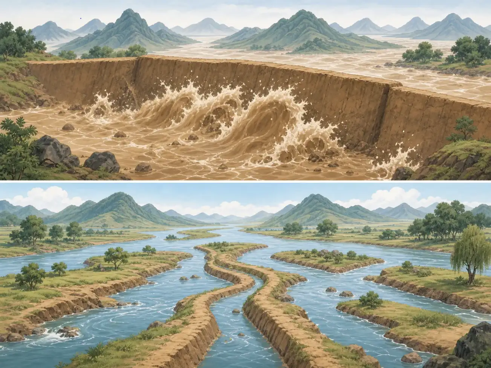

大禹怎样给洪水找路？
How Did Yu Make a Path for the Water?
Page 1
挡住，还是让水流走？
Block the Water or Give It a Path?

This picture imagines the traditional story. It is not a photograph of ancient engineering.
很久以前，人们讲起一场可怕的大洪水。大水漫过土地，让很多地方不能居住。
传统故事说，禹的父亲鲧想挡住洪水，却没有成功。后来，禹清理河道，让水流向大河和海洋。
“鲧只会堵，禹懂得疏”很好记，却不是四千年前留下的工程报告。古书讲了父子成败，却没有把每一面墙和每一条水道记录下来。
Long ago, people told of a terrible flood. Water spread across the land and made many places impossible to live in.
In the traditional story, Yu's father, Gun, tries to hold the water back but fails. Yu later clears waterways so the water can move toward rivers and the sea.
“Gun blocked; Yu guided” is easy to remember. It is not an engineering report written four thousand years ago. Old texts tell of failure and success, but they do not record every wall and channel.
Page 2
许多人一起工作
Many People Work Together

This imagined scene shows people clearing waterways. The tools and place are not documented.
古书里的工作比挖一条沟大得多。它还包括观察山川、整理湖泽、恢复农田、运送粮食和安排土地。
画里，许多人一起清理水道。我们不知道他们真的用了什么工具，也不知道禹走过哪一座山。不过，故事记住了一件重要的事：这么大的工作，不可能只靠一个英雄的双手。
禹的力量不只是打败敌人。传统赞美他组织大家完成公共工作，让人们可以重新生活。
The work in the old texts is much bigger than digging one ditch. It includes studying mountains and rivers, arranging marshes, restoring fields, moving food, and organizing the land.
In the picture, many people clear a channel together. We do not know their exact tools or which mountain Yu visited. The story still remembers something important: work this large could never be done by one hero's two hands.
Yu's greatness is not mainly about defeating an enemy. Tradition praises him for organizing work that helped people live on the land again.
Page 3
家门就在身边
Home Was Close By

The family at the doorway is imagined. Old texts do not record this full scene.
一个著名故事说，禹三次经过自己的家门，都没有进去。《孟子》说他在外八年，三过家门。《史记》说他在外十三年，经过家门也不敢进去。
后来的人加入妻子生孩子、孩子长大呼唤父亲等情节。那些完整画面不在早期文字里。
人们一直讲家门的故事，因为它让我们看见公共工作也会给家庭带来代价。我们也可以问：一个好领袖一定要牺牲自己和家人吗？
One famous story says that Yu passed his own door three times without entering. The Mencius says that he worked away for eight years and passed home three times. The later Records of the Grand Historian says thirteen years and tells us that he did not enter when he passed.
Later storytellers added a baby being born and a growing child calling for his father. Those complete scenes are not in the early words.
People remember the doorway because public work can carry a cost for a family. We can also ask: Must a good leader always sacrifice himself and the people at home?
Page 4
泥土不能写出英雄的名字
Mud Cannot Write a Hero's Name

“Block or guide” is a concept picture, not archaeological evidence.
科学家能从地层看出某个地方发生过洪水。2016年，一组研究者提出，黄河上游大约在公元前1920年发生过巨大洪水，也许和大禹传说有关。
其他研究者检查年代和泥沙以后，提出不同结论。古书里的洪水范围也比一个地方大得多。
泥土能告诉我们洪水可能何时发生、怎样形成，却不会写着“大禹来过这里”。真实洪水可能进入传说，但现在还不能证明哪一场就是“大禹的洪水”。
Scientists can study layers of earth to learn that a flood happened. In 2016, one team proposed that an enormous flood struck the upper Yellow River around 1920 BCE and might be connected with the Yu legend.
Other researchers examined the dates and sediments and reached different conclusions. The waters in the old stories also cover far more than one place.
Mud can suggest when a flood happened and how it formed. It cannot say, “Yu was here.” A real disaster may have entered the legend, but no one has proved which flood was “Yu's flood.”
传说怎样一层层长大
How a Legend Grew
后来的人把治水英雄禹写成夏朝的第一位君主。考古发现也证明很早以前有复杂的大型社会，却没有找到写着“这就是禹”的文字。
大禹故事不是一份已经证明的生平，却是流传两千多年的文化记忆。它问：什么样的人值得领导？传统给出的答案是，能组织大家完成共同需要的工作、让百姓安居的人。
分清传说和证据不会让故事变小。它让我们看见故事怎样一层层长大。
Later tradition made the flood hero Yu the founder and first king of the The dynasty that later stories describe as China's earliest kingdom.. Archaeology proves that large, complex societies existed in that ancient world, but no writing from that time names Yu as their king.
Yu's story is not a proven biography. It is a cultural memory told for more than two thousand years. It asks what kind of person deserves to lead. Tradition answers: someone who can organize work that people need and make life possible again.
Separating legend from evidence does not make the story smaller. It lets us see how the story grew, layer by layer.
大禹治水：传说与证据
Yu the Great: Legend and Evidence
Page 1
“堵”和“疏”没有那么简单
Blocking and Guiding Are Not So Simple
This imagined scene comes from tradition. It is not a record of Gun's engineering.
传统常说，鲧只会筑坝堵水，所以失败；儿子禹改为疏通河道，所以成功。这个对比很有力量，也很容易记。
不过，《史记》只说鲧治水九年没有成功，古书也写禹开通水道。它们没有留下土墙今天挡住、明天冲破的现场报告。学者提醒，“堵错、疏对”可能把许多传统整理得过于整齐。
我们没有禹时代留下的日记、地图和命令。较晚的青铜铭文与古书能告诉我们，两三千年前的人怎样记住禹，却不能直接打开传说时代的窗户。
A familiar telling says that Gun built barriers and failed, while his son Yu opened waterways and succeeded. The contrast is powerful and easy to remember.
The Records of the Grand Historian does say that Gun worked for nine years without success, and old texts describe Yu opening channels. They do not provide a witness's account of one wall holding and then bursting. Scholars warn that “blocking was wrong; guiding was right” may arrange many traditions too neatly.
We have no diary, map, or command from Yu's supposed lifetime. Later bronze inscriptions and books show how people remembered Yu two or three thousand years ago. They do not open a direct window into the age of the legend.
Page 2
工作比一条河更大
Work Larger Than One River
This imagined group clears waterways. Exact tools and locations are not documented.
早期文献里的洪水遍及大地。《尚书》写禹开通大河入海，又挖小沟通向河流；《孟子》也说禹疏通多条水道。
山川、湖泽、农田、粮食、道路和土地安排都进入禹的工作。对古代讲述者来说，治水不仅是赶走洪水，更是把混乱世界整理成能耕种、通行和生活的地方。
画里的整齐水道不是工程复原。现有证据不能列出禹走过的山、带领的队伍或使用的工具。传统真正强调的是组织公共劳动，让土地恢复秩序。
Early writings spread the floodwaters across the land. The Book of Documents describes Yu opening great rivers toward the seas and smaller ditches toward the rivers. The Mencius also tells of many waterways cleared toward the sea.
Mountains, marshes, fields, food, roads, and the organization of land all enter Yu's work. For ancient storytellers, controlling water meant more than ending a flood. It made a disorderly world fit for farming, travel, and life.
The painting's neat channels do not reconstruct a real project. Evidence cannot list Yu's mountains, crews, or tools. The tradition emphasizes his organization of public work and the return of order to the land.
Page 3
三次家门，两个年数
Three Passes and Two Different Numbers
The family at the doorway is a modern imagining, not a complete scene from an early text.
《孟子》说禹在外八年，三次经过家门不进去。更晚的《史记》说他在外十三年，路过家门不敢进去。一个明确是八年和三次；另一个是十三年，却没有在那句话中数三次。
后来故事加入妻子生产、婴儿哭泣、孩子长大呼唤父亲等情节。古书把禹的婚姻、儿子启和治水放在同一传统里，却没有告诉我们每次路过时的完整画面。
家门故事把公共责任的私人代价画出来。今天的读者也能追问：赞美禹时，是否忽略家人？好领袖只能靠牺牲自己和家庭吗？
The Mencius says that Yu spent eight years away and passed his door three times without entering. The later Records of the Grand Historian says thirteen years and tells us that Yu did not dare enter when he passed home. One source gives eight years and three passes; the other gives thirteen without counting three in that sentence.
Later stories added a wife giving birth, a crying baby, and an older child calling for his father. Ancient texts connect Yu's marriage, his son Qi, and the flood work, but they do not describe each doorway scene.
The doorway makes the private cost of public duty visible. Readers can also ask whether praise of Yu forgets his family. Must a good leader always sacrifice himself and the people at home?
Page 4
英雄怎样成为夏朝君主？
How Did the Hero Become a Xia King?
后来的历史传统排出一条清楚路线：鲧失败，禹成功，舜把权力交给禹，禹成为夏朝第一位君主。但有学者认为，早期故事更关心水土秩序，特定洪水和建立夏朝后来才连得更紧。
河南二里头是一处重要的早期青铜时代中心，有大型建筑、道路和精美器物。许多研究者把它和夏朝联系起来，另一些人认为证据不足。遗址没有留下写着“这里就是夏”或“君主是禹”的同时代文字。
二里头证明那个时代有复杂社会，却不能替我们确认传说中的每个人。
Later historical tradition builds a clear chain: Gun fails, Yu succeeds, Shun hands leadership to Yu, and Yu becomes the founder and first king of Xia. Some scholars argue, however, that early stories focused more on ordering water and land. One particular flood and the founding of Xia became more tightly connected later.
Erlitou in Henan was a major early Bronze Age center with large buildings, roads, and finely made objects. Many researchers connect it with the Xia dynasty; others say the evidence is not decisive. No writing from the site says, “This is Xia,” or says that Yu ruled there.
Erlitou proves that a complex society existed in that ancient world. It cannot identify every person in the later tradition.
Page 5
找到洪水，不等于找到禹
Finding a Flood Is Not Finding Yu
This “block or guide” comparison is a concept picture, not archaeological or geological evidence.
2016年，研究团队报告黄河上游积石峡一次巨大古洪水。他们提出，大约公元前1920年地震造成山体滑坡，堵住河流；天然坝决开后，洪水冲向下游，也许和大禹传说有关。
其他研究者重新检查年代和沉积物，对洪水时间、规模和附近遗址的关系提出不同结论。文献学者也指出，禹故事的水遍及许多地区，不只是黄河上游一次洪水。
地质学能发现洪水，却不能在泥沙里找到英雄名字。真实灾害可能进入传说，但积石峡目前不能被宣布为“大禹的洪水”。
In 2016, researchers reported evidence for an enormous ancient flood at Jishi Gorge on the upper Yellow River. They proposed that an earthquake caused a landslide around 1920 BCE. The slide blocked the river, and the natural dam later burst. They suggested that the disaster might connect with the Yu legend.
Other researchers rechecked dates and sediments and disagreed about the flood's timing, size, and connection with a nearby settlement. Scholars of early texts also note that Yu's waters cover many regions, not one event high on the Yellow River.
Geology can find a flood. It cannot find a hero's name in the mud. A real disaster may have entered the legend, but the Jishi evidence cannot yet be announced as “Yu's flood.”
传说提出的政治问题
The Political Question Inside the Legend
土墙、河道、家门和“堵或疏”都能带我们进入故事，却没有一幅图是现场照片。我们可以感受洪水恐惧、共同劳动和离家代价，也要问清每个细节来自什么证据。
大禹故事还问：领袖为什么值得信任？因为出身、武力，还是因为能组织大家完成共同需要的工作？后来的人把治水英雄写成开国君主，也是在回答：让百姓安居的人才有资格领导。
这不是已经证实的大禹生平，却是存在两千多年的文化记忆。分清证据与传说，让我们看见故事怎样一层层长大。
The wall, channels, doorway, and “block or guide” picture all lead into the legend. None is a photograph. We can feel the fear of floodwater, the strain of shared work, and the cost of leaving home while still asking what evidence supports each detail.
The legend asks a political question too: Why should people trust a leader? Because of birth or force - or because that person can organize work everyone needs? By turning a flood hero into a founding king, later storytellers offered an answer: a person who makes life possible for the people has earned the right to lead.
This is not a proven biography of Yu. It is a cultural memory more than two thousand years old. Separating evidence from legend lets us see the story grow, layer by layer.
大禹治水：洪水、英雄与王朝的记忆
Yu the Great: A Flood, a Hero, and the Memory of a Dynasty
Page 1
一幅画，不是一张现场照片
A Painting Is Not a Photograph
This imagined scene comes from the traditional story. It is not a record of Gun's actual engineering.
画面里，浑黄的水撞向土墙，几个人拿着简单的工具，想把洪水挡回去。我们常听到这样的讲法：禹的父亲鲧只知道“堵”，所以失败；禹改用“疏”，给水找路，于是成功。
这个对比很容易记，但先要给它贴上标签：这是后人整理出来的一种传统讲法，不是四千年前留下的工程记录。《史记》确实说鲧治水九年没有成功，也说禹后来开通水道；可是“土墙今天堵住、明天从另一边冲破”这样的过程，古书没有为我们留下现场报告。学者也提醒，把父子成败简单解释成“堵错了、疏对了”，可能把复杂的传说讲得太整齐。
我们没有禹那个时代写下来的日记、地图或命令。今天读到的大禹故事，来自年代晚得多的青铜器铭文和古书。它们能告诉我们：至少两三千年前，人们已经怎样记住禹；它们却不能让我们直接看见传说所说的时代。
Muddy water slams against an earthen wall. People with simple tools struggle to hold the flood back. A familiar version of the story says that Gun, Yu's father, knew only how to block water, so he failed. Yu opened paths for the water instead, so he succeeded.
It is a memorable contrast, but it needs a label: This is a traditional way of arranging the story, not an engineering report from 4,000 years ago. The Records of the Grand Historian does say that Gun worked for nine years without success. Ancient texts also describe Yu opening waterways. They do not give us a witness's report of one wall holding today and breaking tomorrow. Some scholars warn that “Gun blocked, Yu guided” may make a complicated group of traditions look much neater than it really is.
We have no diary, map, or order written in Yu's own time. The Yu stories we can read come from bronze inscriptions and books created much later. They show us how people remembered Yu at least two or three thousand years ago. They do not give us a window straight into the age described by the legend.
Page 2
古书里的工作，比一条河大得多
The Work in the Texts Was Bigger Than One River
This imagined scene shows people clearing waterways together. Its exact channels, tools, and poses are not documented.
早期文献中的洪水铺满大地，漫过丘陵，让许多地方无法居住。《尚书》里的禹说，自己开通大河，使水通向四海；又挖通小沟，让小沟里的水流进大河。《孟子》也写禹疏通许多河道，让水流入海。
古书还把测量山川、整理湖泽、恢复农田、运送粮食和划分土地都放进禹的工作里。这个范围大得惊人，远远不只是在黄河某处挖一条沟。对古代讲故事的人来说，治水不只是把洪水赶走，更像是把一片混乱的世界整理得可以耕种、通行和生活。
因此，画中那些整齐的小水道不能当成大禹工程的准确复原图。我们可以把它看作一种想象：许多人观察高低和水流，一起清理通道，让水有地方去。至于禹走过哪一座山、指挥过哪一支队伍、使用过什么工具，现有证据无法画出完整清单。
这个故事后来进入政治文化，是因为它把“谁应该做领袖”与“谁能让百姓重新生活”连在了一起。禹的力量不只是打败敌人；传统更强调他组织艰难的公共工作，让土地恢复秩序。
Early writings describe water spreading across the land and making many places impossible to live in. In the Book of Documents, Yu says that he opened great rivers toward the seas and dug smaller ditches so their water could reach the rivers. The Mencius also tells of Yu clearing waterways and sending the water to the sea.
These texts place much more than river digging inside Yu's work. They mention mapping mountains, arranging lakes and marshes, restoring fields, moving food, and organizing land. The job is far larger than cutting one channel beside the Yellow River. To the ancient storytellers, controlling the waters was also about turning a disorderly world into a place where people could farm, travel, and live.
The neat channels in the painting are not an exact reconstruction of Yu's project. We can treat the picture as an idea: many people study the land, clear paths, and work together to give water somewhere to go. The evidence cannot give us a complete list of the mountains Yu visited, the teams he led, or the tools they carried.
This helps explain why the story became part of political culture. It connects the question “Who should lead?” with another question: “Who can make life possible for the people?” Yu's greatness is not mainly about defeating an enemy. In the tradition, he organizes difficult public work and brings order back to the land.
Page 3
“三过家门”有不止一个版本
More Than One Version of the Doorway Story
The family at the door is a modern artist's imagining. Early texts do not record this complete scene.
“三过家门而不入”是故事里最让人难忘的一幕，但古书并没有留下今天常讲的三段完整家庭剧情。《孟子》说，禹在外八年，三次经过家门都没有进去。《史记》写得更晚，说禹在外十三年，路过家门也不敢进去。一个说八年，一个说十三年；一个明确说三次，另一个没有在这句话里给出“三次”。
后来的人把不同材料连在一起，又加入妻子生产、婴儿啼哭、孩子长大呼唤父亲等细节。古书的确把禹的婚姻、儿子启和治水放在同一组传统里，但我们不能因此断定每一次路过家门时发生了什么。画中站在门边的家人，是现代画家帮助我们感受“家就在身后”的想象场景，不是经过证实的一刻。
这一幕不断被讲，因为它把一个看不见的品质画了出来：公共责任会要求人付出私人代价。今天的读者也可以继续追问：故事在赞美禹时，有没有忽略家人的感受？一个好领袖是否只能靠牺牲自己和家人？古老故事不一定替我们回答，但它能把难题摆到眼前。
The most famous scene may be “passing his door three times without going inside.” Yet the oldest texts do not give us the three complete family scenes often told today. The Mencius says Yu spent eight years away and passed his door three times without entering. The later Records of the Grand Historian says that he stayed away for thirteen years and did not dare enter when he passed home. One says eight years and three passes. The other says thirteen years but does not count three passes in that sentence.
Later storytellers joined different pieces and added Yu's wife giving birth, a crying baby, and a son calling for his father at different ages. Ancient texts do connect Yu's marriage, his son Qi, and his flood work, but that does not tell us exactly what happened at his door each time. The family in the painting is a modern artist's way of helping us feel that home was close behind him. It is not a proven moment.
People kept telling the scene because it turns an invisible quality into a picture: public duty can carry a private cost. A reader today can ask another question too. Does the praise of Yu leave out what his family may have felt? Must a good leader always harm himself or his family? The old story does not have to answer for us. It can place a hard question where we can see it.
Page 4
治水英雄怎样成了开国君主
How the Flood Hero Became a Founding King
后来的历史传统把故事排成一条清楚的路线：鲧失败，禹成功；舜把统治权交给禹；禹又成为夏朝的第一位统治者。夏朝通常被称为中国传统历史中的第一个王朝。
可是，这条路线不是所有早期材料一开始就完整讲好的。有学者指出，较早的禹故事主要关心他怎样整理水土、让世界适合生活；“控制一场特定洪水”与“建立夏朝”后来才被更紧密地接到一起。《史记》完成于禹传说时代之后很久，它保存了影响深远的完整版本，却不是同时代记录。
考古学让问题更有趣，也更难。河南发现的二里头遗址是一处重要的早期青铜时代中心，那里有大型建筑、道路和精美器物。许多研究者把二里头文化与夏朝联系起来，另一些研究者则认为证据还不能确定。遗址没有留下能让我们读出“这里就是夏”或“这位统治者就是禹”的同时代文字。
所以，比较稳妥的说法是：夏朝和禹在中国历史传统中非常重要；二里头证明那个时代确实出现了复杂的大型社会，但它还没有替我们确认传说中的每个人和每件事。
Later historical tradition arranges these events into a tidy sequence. Gun fails. Yu succeeds. Shun hands leadership to Yu. Yu then becomes the founder of the Xia dynasty, usually described as the first dynasty in traditional Chinese history.
That whole chain was not fully joined together in every early source. Some scholars argue that the earlier Yu stories focus on ordering water and land so people can live. The control of one particular flood and the founding of the Xia became more tightly connected later. The Records of the Grand Historian preserves the complete version that shaped later memory, but it was written long after the age it describes.
Archaeology makes the question more interesting - and harder. At Erlitou in Henan, archaeologists found a major early Bronze Age center with large buildings, roads, and finely made objects. Many researchers connect the Erlitou culture with the Xia. Others say the evidence does not settle the question. No writing from the site tells us, “This is Xia,” or says that Yu ruled there.
The careful conclusion is this: Yu and the Xia are deeply important in China's historical tradition. Erlitou proves that a large, complex society existed during roughly the period associated with the Xia. It does not confirm every person and event in the later stories.
Page 5
地层找到洪水，却找不到英雄的名字
Mud Can Reveal a Flood, but Not a Hero's Name
This picture shows the familiar “block or guide” contrast. It is a concept image, not archaeological evidence.
2016年，一组研究者报告了黄河上游积石峡一次巨大的古代决口洪水。他们提出，大约公元前1920年，地震引起山体滑坡，堵成堰塞湖；天然堤坝后来决开，洪水奔涌而下。这项研究认为，这场灾难也许与大禹洪水传说有关。
这个发现引起了很大兴趣，却没有让问题结束。其他研究者重新检查年代和沉积物，对那场决口洪水的时间、规模以及它与附近遗址灾难的关系提出了不同结论。研究古代文献的学者还指出，大禹故事中的水遍及许多地区，并不等于一场发生在黄河上游的单次洪水。
地质学可以告诉我们某地曾有洪水、洪水大约何时发生、可能怎样形成；它不会在泥沙里写出“大禹到过这里”。即使某次真实灾害后来进入了传说，我们也仍要证明中间的联系。现在没有证据让我们把积石峡洪水直接宣布为“大禹治的那一场”。
古代中国许多地方都经历过洪水。大禹故事可能保存了人们对长期水患、迁徙、合作和土地治理的记忆，也可能把许多经验集中到一个英雄身上。这是一种合理的思考方向，却不是已经证明的答案。
In 2016, a research team reported evidence for a huge ancient flood at Jishi Gorge, high on the Yellow River. The team proposed that an earthquake caused a landslide around 1920 BCE. The fallen earth blocked the river and formed a lake. When that natural dam burst, an enormous rush of water swept downstream. The researchers suggested that this disaster might be connected to the Great Flood story.
The study caused great excitement, but it did not end the debate. Other researchers checked dates and sediments again and reached different conclusions about the timing, size, and connection between the proposed flood and disasters at a nearby settlement. Scholars of ancient texts also pointed out that Yu's waters cover many regions in the stories. They are not simply one flood high on the Yellow River.
Geology can show that a flood happened in a certain place, suggest when it happened, and explain what may have caused it. Mud does not contain a label saying, “Yu was here.” Even if a real disaster eventually became part of a legend, researchers still have to show the link. At present, the Jishi Gorge evidence cannot prove that scientists have found “Yu's flood.”
Many parts of ancient China experienced floods. The Yu story may preserve memories of long struggles with water, movement from place to place, shared labor, and the work of making land usable. It may also gather many experiences around one hero. Those are thoughtful possibilities, not proven answers.
再看这四幅画
Look at the Four Pictures Again
土坝、河道、家门和“堵或疏”的对比，都能帮助我们进入故事，但没有一幅是现场照片。读古老传说时，我们可以同时做两件事：让故事把洪水的恐惧、共同劳动的艰难和离家的代价带到眼前；也问清每个细节来自哪一种证据。
大禹治水最值得记住的，也许不只是“硬堵不如疏导”这一句整齐的道理。故事还提出了更大的政治问题：一个领袖凭什么得到信任？是因为出身、武力，还是因为他能组织众人完成大家都需要的工作？当后人把治水英雄写成开国君主时，他们其实也在回答：能够让百姓安居的人，才有资格领导。
这不是一份已经证实的大禹生平，却是一段真实存在了两千多年的文化记忆。认真区分证据与传说，不会让故事变小；它会让我们看见，这个故事是怎样一层一层长大的。
The wall, the channels, the doorway, and the choice between blocking and guiding can all lead us into the story, but none is a photograph. We can let the legend show us the fear of floodwater, the strain of working together, and the cost of leaving home. At the same time, we can ask what kind of evidence supports each detail.
The story offers more than the neat lesson “guiding is better than blocking.” It asks a larger political question: What gives a leader the right to be trusted? Birth? Force? Or the ability to organize people and do work that everyone needs? When later storytellers turned a flood hero into a founding king, they offered an answer: A person who makes life safer for the people has earned the right to lead.
This is not a fully documented life of Yu. It is an enduring cultural memory, retold for more than two thousand years. Separating evidence from legend does not shrink the story. It lets us see how the story grew, layer by layer.